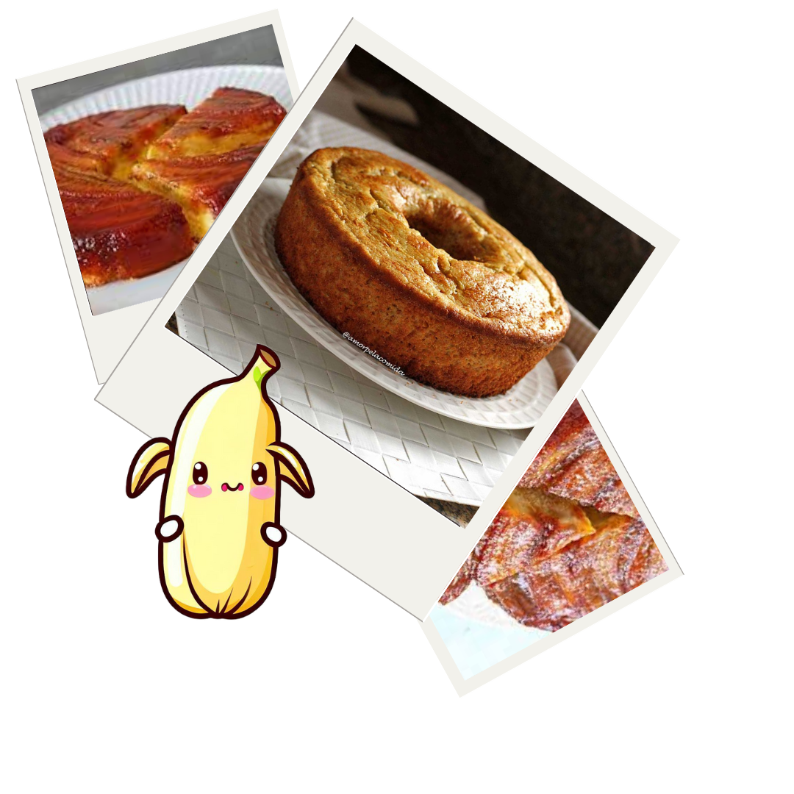

Bolo de Banana

Ingredientes
Massa
- 3 ovos
- 2 xícaras (chá) de açúcar
- 1 xícara (chá) de leite
- 1/2 xícara (chá) de óleo
- 2 xícaras (chá) de farinha de trigo
- 1 colher (sopa) de fermento químico
- 7 bananas
Cobertura
- 3/4 xícara (chá) de açúcar
- 1/2 xícara (chá) de água quente
Modo de Preparo
Tempo de preparo : 30min
Cobertura
- Em uma panela, adicione o açúcar e misture até derreter.
- Despeje a água quente e mexa até dissolver o açúcar.
- Deixe engrossar até chegar ao ponto de calda e reserve.
Massa
- Massa: Bata no liquidificador os ovos, o açúcar, o óleo e o leite.
- Acrescente a farinha de trigo aos poucos e continue batendo até obter uma massa lisa e homogênea.
- Adicione por último o fermento e bata na velocidade mínima do liquidificador.
- Unte uma forma média com margarina e farinha.
- Despeje o caramelo e as bananas cortadas no comprimento.
- Leve para assar em forno médio (180°C), preaquecido, por aproximadamente 30 minutos.